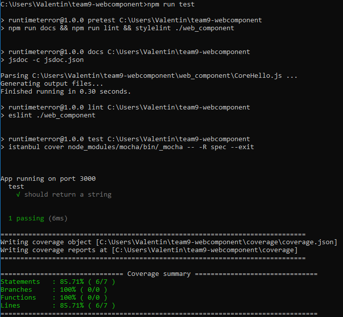

Core Files
The package.json file is the heart of Node.js system. It is the manifest file of any Node.js project and contains the metadata of the project.
It can be divided into 2 parts.
The main script is in this json file. This is where we can make references to other parts of the project.
Look at the script part,
"lint": "eslint ./web_component"
We can now use the following command to run eslint on all JavaScript files in the web_component folder.
npm run lint
In this script, we refer to nyc, testcafe, saucelabs and jsdoc.
TestCafe is a tool for Browser testing, it uses SauceLabs.
JSDoc is for documentation. We refer to it as "docs".
Coverage is used to make a report of the tests and upload it on CodeClimate. We only use it as the end of the script.
Please refer to the Travis file to understand the process order.
We can basically refer to any tools or configuration in the package.json file.
The most important part is the testing phase.
Here we are running docs,eslint and stylint for all CSS files. If there is no issue, we can continue and run the test.
We divided the tests in 3 parts:
pretest with the linting phase
test with the unit tests
postest with the E2E tests
It is just a way of structuring the testing phase.
The test phase is unit tests using nyc and istanbul. It runs mocha and will show the result on the console, then make a report file.
Here I just ran the following command
npm run test
Don't worry, Travis is automatically doing this. DevOps you should be able to switch and run anything you want by changing the script here!
The second part deals with dependencies. Just know that if you install something new and it is not in the dependencies, it won't work!
This is why we are running npm install in the .travis.yml file.
If you implement a new feature or use a new npm package, make sure you do
npm install <=your package=> --save -dev
Last thing, package-lock.json is automatically generated for any operations where npm modifies either the node_modules tree, or package.json.
It describes the exact tree that was generated, such that subsequent installs are able to generate identical trees.
==> Regardless of intermediate dependency updates <==